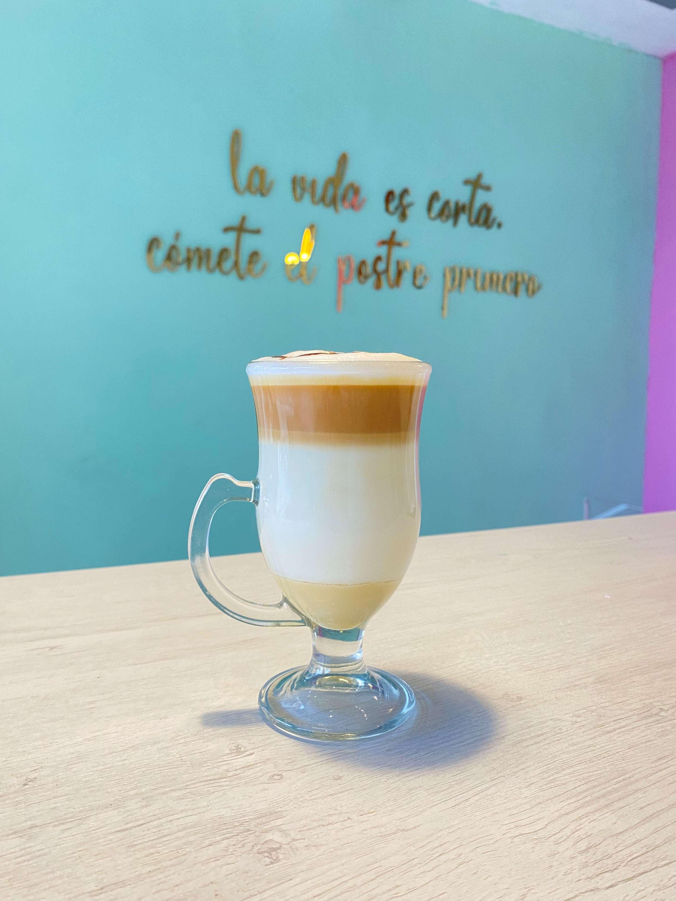
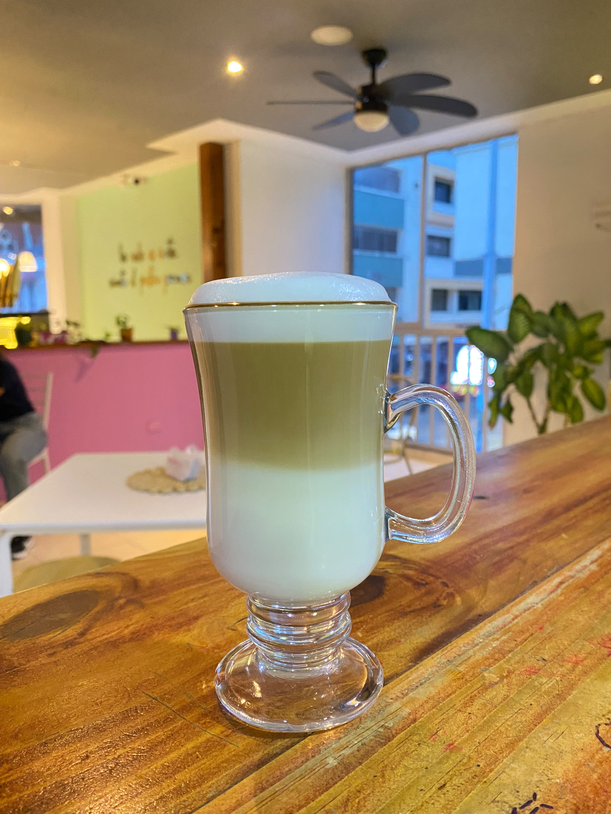
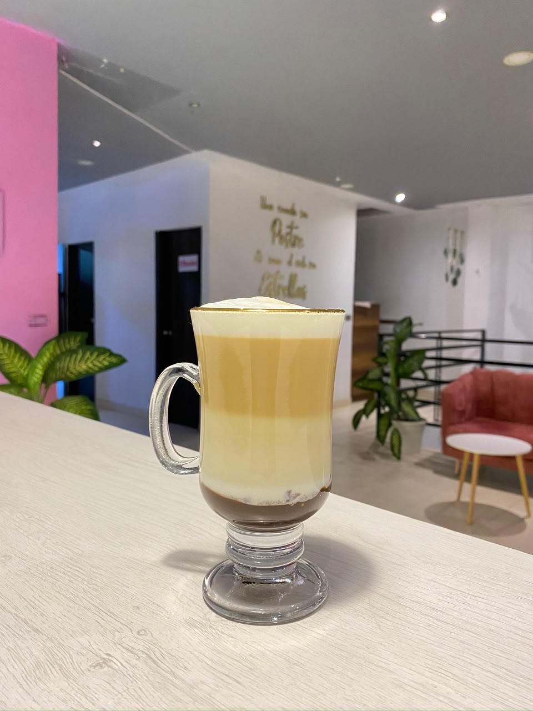
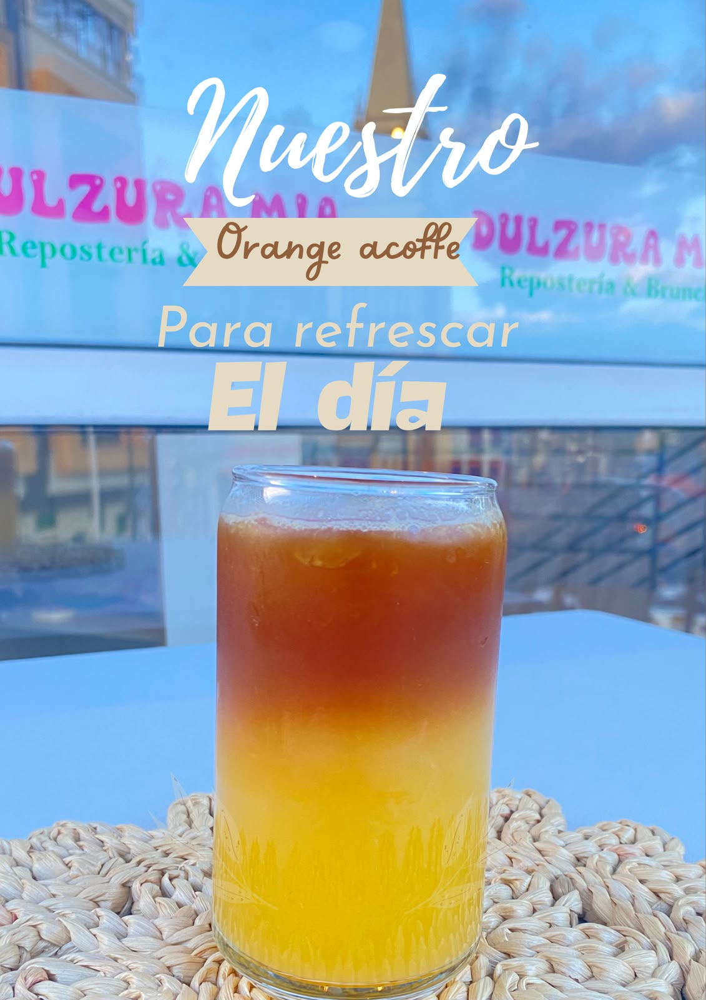

Descubre nuestras recetas de café y bebidas especiales, con instrucciones paso a paso y gramajes precisos para lograr la perfección en cada preparación.

Presentación Final Esperada"Creado para los amantes de los sabores dulces y cremosos que buscan consentir su paladar a cualquier hora del día.
¡Ideal para maridar con nuestros postres!"

Presentación Final Esperada (Efecto 3 Capas)"Una presentación deslumbrante en tres capas donde la suavidad de la leche cremada abraza delicadamente la intensidad de nuestro espresso de Caicedonia."

Presentación Final Esperada (Efecto en Capas con Chocolate)"La combinación perfecta para los amantes del chocolate y el café gourmet. Una bebida cremosa y tentadora con el toque ideal de dulzura."

Presentación Final Esperada (Cítrico Refrescante en Capas)"Una experiencia frutal y ultra refrescante que combina las notas cítricas naturales de la naranja con el cuerpo denso y aromático de nuestro café de especialidad."